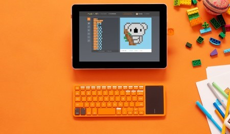
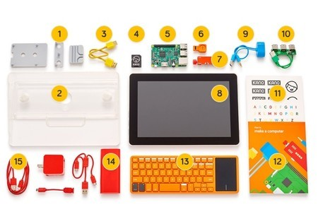

Los niños (y mayores) ya se pueden construir un funcional portátil gracias al nuevo kit de Kano
La empresa Kano lleva años sorprendiéndonos con kits que han permitido contar con pequeños miniordenadores basados en las Raspberry Pi, y ahora vuelven a apoyar estos proyectos con una nueva alternativa: un kit para construir un portátil.
El llamado Computer Kit Complete es una evolución de esos kits de teclado-ordenador y pantalla que ya habíamos visto y lo transforma en un verdadero portátil que cualquiera se puede construir con la ventaja de aprender cuáles son los componentes principales de este tipo de máquinas. Y cuando decimos cualquiera, es que es cualquiera.
Un portátil que te educa desde el primer instante
Los responsables del producto de hecho señalan cómo se ensambla el kit gracias a unas instrucciones en forma de pequeño cómic que se incluye en el paquete. Es allí donde se explica cómo se colocan y funcionan componentes como la batería, los sensores, los altavoces o la placa principal. El equipo está basado en una Raspberry Pi 3, a la que se suma la pantalla de 10,1 pulgadas, un sensor de sonido, batería recargable, la carcasa o el teclado con touchpad que permiten montar este singular equipo. A partir de ese momento, claro, toca disfrutar de un modesto pero funcional portátil con el que poder aprender a programar en lenguajes como JavaScript o Python a partir de herramientas visuales que van de menos a más.